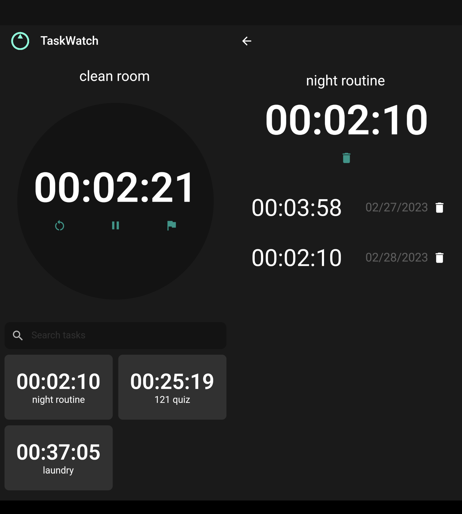
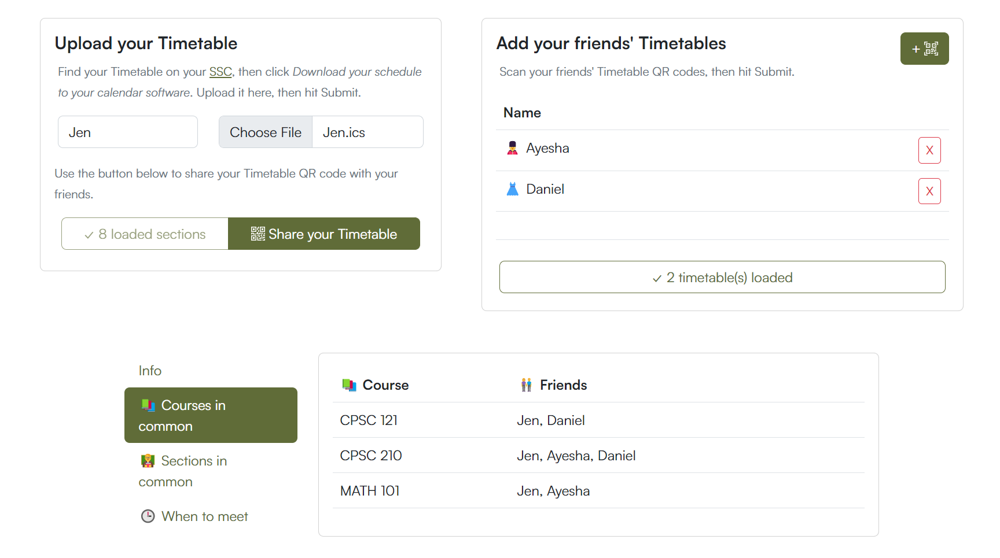
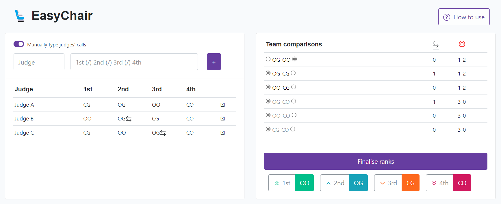

Coding

Cross-platform productivity application for recording and optimising speed of completing tasks

Social networking app for UBC students (reached 5,000+ views in two weeks)

Web app used by judges of Indonesian National Championships in 2021 and 2022
Remade website homepage, theme designs, and improved in-site search (increased monthly traffic to ∼200%)